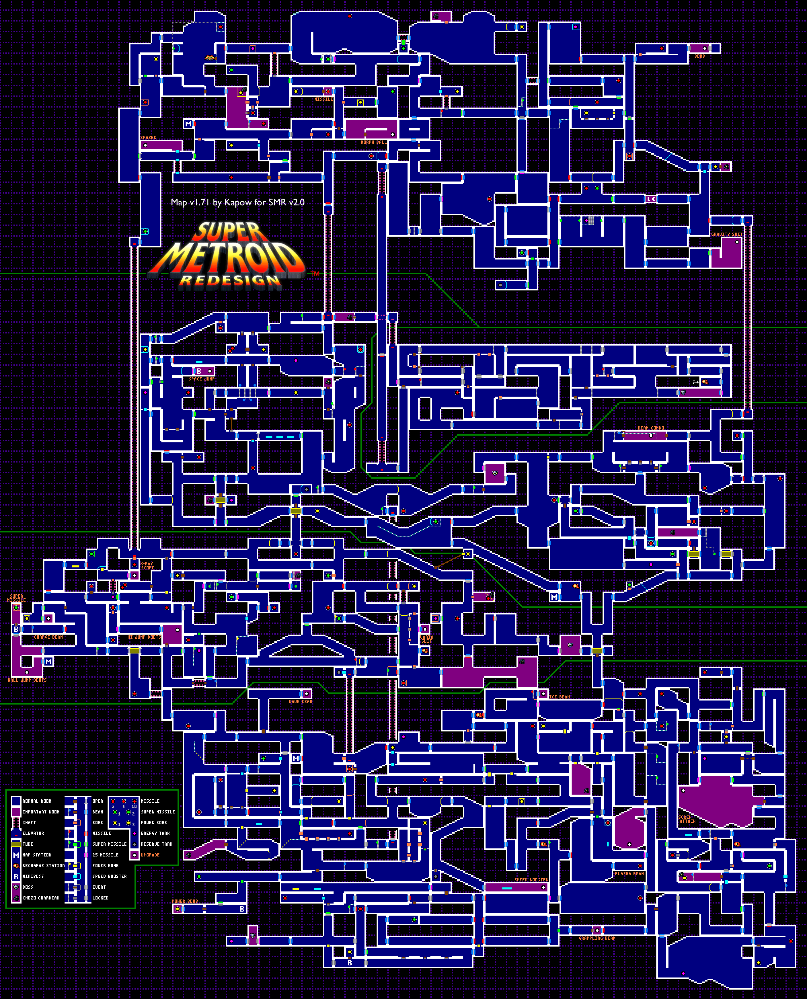

Super Samus
Super Metroid was released both in Japan and North America in 1994, for the Super NES. The game is developed by Nintendo R&D1 and published by Nintendo. It's the third installment of the series and it follows the events of the previous title for the Game Boy. The main character of the series is bounty hunter Samus Aran, who explores the 2D world of this Metroidvania platformer. The major elements of the game define in fact (in addition to elements from the classic Castlevania) a subgenre of its own.
Gameplay

Super Metroid is a side-scrolling action-adventure game that involves
exploration, platforming, and fighting various enemies and bosses. The
player is given a lot of freedom in moving around the world, featuring
big areas connected to each other through doors or elevators. This aspect
of its design made the game particularly attractive to speedrunners
(players who try to beat a game in the shortest time possible).
While progressing in the story Samus finds new power-ups that allow
her to gain access to areas previously locked or inaccessible. Two of
the most iconic upgrades available are for example the Morphing Ball,
which allows Samus to curl into a ball and roll around, or the Grapple
Beam, that can be used to swing across holes or obstacles.
Plot
The game takes place on the planet Zebes, from the original game, where Ridley (leader of the Space Pirates) took refuge with the stolen Metroid larva. The alien specimen was initially secured by Samus for scientific study, and it possessed inestimable value. After reaching Zebes she starts searching the planet for the Metroid. This journey brings her to fight various enemies, discover new areas, and defeat four main bosses, before reaching the classic final boss and the end of the game.

A truly Super Game
Super Metroid had an incredible reaction from the public and remains to this day one of the most praised games in the history of not only the SNES but the whole world of gaming. The mix of the classic 2D style, a challenging platforming experience, and incredible boss battles topped off with immersive music make this game a timeless gem.